pandas и seaborn
Библиотека matplotlib может быть инструментом довольно низкого
уровня. График собирается из его базовых компонентов: отображения
данных (т.е. тип графика: линия, полоса, прямоугольник, разброс,
контур и т.д.), легенды, заголовка, меток и других аннотаций. В
библиотеке pandas мы можем получить множество столбцов данных, а
также метки строк и столбцов. В pandas имеются встроенные методы,
которые упрощают визуализацию объектов DataFrame и Series. Еще
одна библиотека для статистических графиков — seaborn.
Объекты Series и DataFrame имеют метод plot для создания базовых
типов графиков. По умолчанию plot() создает линейные графики
In [32]: s = pd.Series(np.random.randn(10).cumsum(), index=np.arange(0, 100, 10))
In [33]: s.plot()
Out[33]: <matplotlib.axes._subplots.AxesSubplot at 0x7fb01a5a7eb0>
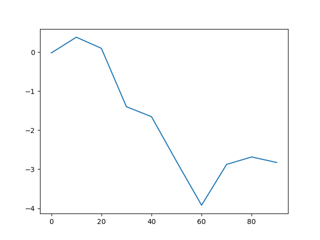
Индекс объекта Series передается в plot библиотеки matplotlib
для оси \( x \). При этом такое поведение можно отключить с помощью
параметра use_index = False. В таблице
visual:plt-with-pandas:tbl:1 дается полный список
параметров функции Series.plot.
Большинство графических методов pandas принимают опциональный
параметр ax, который может являться объектом subplot. Это
позволяет размещать подграфики на сетке.
Таблица 2. Параметры метода Series.plot
| Параметр | Описани |
label | Метка для легенды |
ax | Объект subplot из matplotlib, в который выводится график. Если не задан — вывод идет в активный подграфик |
style | Строка, задающая стиль графика (например, ko--) |
alpha | Прозрачность заполнения графика (от 0 до 1) |
kind | Тип графика. Может быть: 'area' , 'bar' , 'barh' , 'density', 'hist' , 'kde' , 'line' , 'pie' |
logy | Использовать ли логарифмический масштаб по оси y |
use_index | Использовать ли объект индекс для меток оси |
rot | Поворот меток оси |
xticks | Значения для меток оси x |
yticks | Значения для меток оси x |
xlim | Границы по оси x (например, [0, 10]) |
ylim | Границы по оси y |
grid | Отображать ли сетку по осям (включено по умолчанию) |
Метод plot объекта DataFrame выводит график для каждого столбца
данных в виде линии на одном и том же подграфике, создавая при этом
легенду автоматически:
In [34]: df = pd.DataFrame(np.random.randn(10, 4).cumsum(0),
....: columns=['A', 'B', 'C', 'D'],
....: index=np.arange(0, 100, 10))
In [35]: df.plot()
Out[35]: <matplotlib.axes._subplots.AxesSubplot at 0x7fb01acbd220>
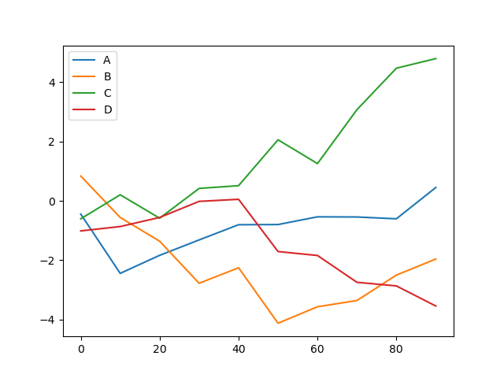
Атрибут plot содержит «семейство» методов для различных типов
графиков. Например, df.plot() эквивалентно df.plot.line().
В DataFrame есть несколько параметры, которые обеспечивают некоторую
гибкость при обработке столбцов. Например, следует ли разместить их
все на одном подграфике или создавать отдельные. В таблице
visual:plt-with-pandas:tbl:2 представлены такие параметры.
Таблица 3. Специфичные для DataFrame параметры plot
| Параметр | Описание |
subplots | Рисовать ли каждый столбец DataFrame в отдельном подграфике |
sharex | Если subplots=True, использовать ли одну и ту же ось x, связывая метки оси |
sharey | Если subplots=True, использовать ли одну и ту же ось y |
figsize | Размер рисунка для создания в виде кортежа |
title | Заголовок рисунка в виде строки |
legend | Добавлять ли легенду на рисунок (по умолчанию True) |
sort_columns | Отображать ли столбцы в алфавитном порядке |
Методы plot.bar() и plot.barh() строят вертикальные и
горизонтальные столбчатые диаграммы. В этом случае индексы объектов
Series и DataFrame в качестве меток на оси x (bar) или y
(barh).
In [36]: fig, axes = plt.subplots(2, 1)
In [37]: data = pd.Series(np.random.rand(16), index=list('abcdefghijklmnop'))
In [38]: data.plot.bar(ax=axes[0], color='k', alpha=0.7)
Out[38]: <matplotlib.axes._subplots.AxesSubplot at 0x7fb01add0880>
In [39]: data.plot.barh(ax=axes[1], color='k', alpha=0.7)
Out[39]: <matplotlib.axes._subplots.AxesSubplot at 0x7fb01ac37af0>
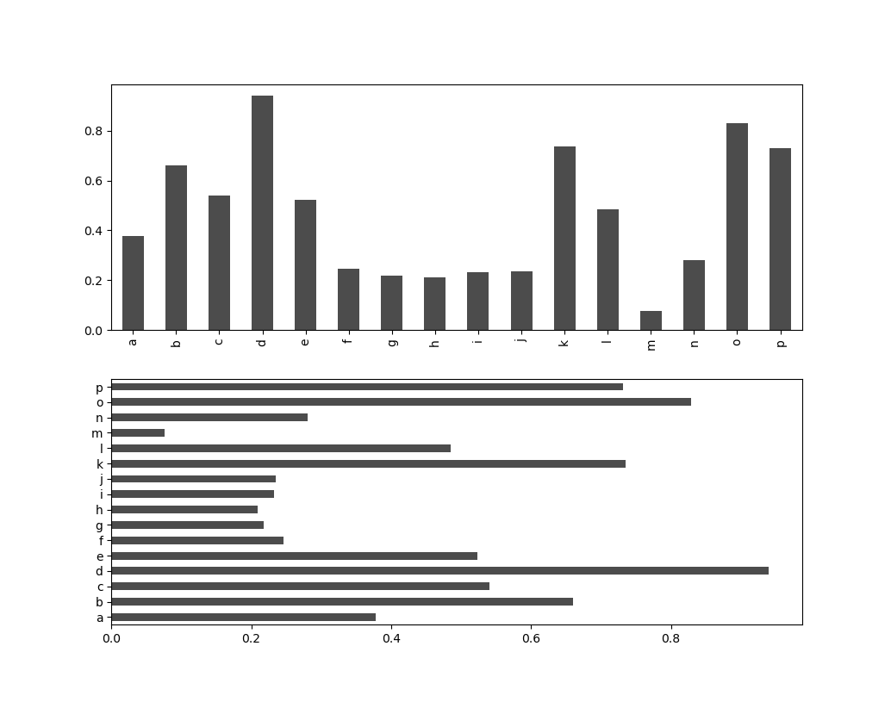
Параметры color='k' и alpha=0.7 устанавливают цвет графика в
черный и частичную прозрачность для заполнения.
В DataFrame столбчатые диаграммы группируют каждую строку значений
вместе в группу столбиков, соответствующих каждому значению в строке:
In [40]: df = pd.DataFrame(np.random.rand(6, 4),
....: index=['one', 'two', 'three', 'four', 'five', 'six'],
....: columns=pd.Index(['A', 'B', 'C', 'D'], name='Genus'))
In [41]: df
Out[41]:
Genus A B C D
one 0.927796 0.523404 0.854142 0.581220
two 0.605077 0.625539 0.416703 0.243262
three 0.766480 0.045345 0.151112 0.079766
four 0.911277 0.331451 0.130595 0.408353
five 0.732850 0.283842 0.046650 0.577424
six 0.056685 0.303711 0.126910 0.879065
In [42]: df.plot.bar()
Out[42]: <matplotlib.axes._subplots.AxesSubplot at 0x7fb01ae47e20>
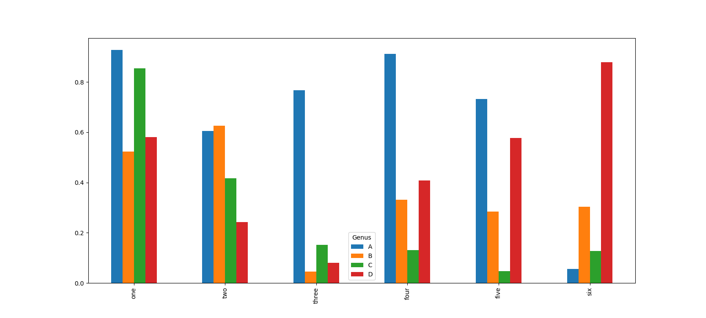
Обратите внимание на то, что имя столбцов 'Genus' используется в
качестве заголовка легенды. Для создания столбчатых диаграмм с
накоплением для DataFrame задается параметр stacked=True, в
результате чего значение в каждой строке будут сгруппировано вместе
In [42]: df.plot.barh(stacked=True, alpha=0.5)
Out[42]: <matplotlib.axes._subplots.AxesSubplot at 0x7fb018fef2e0>
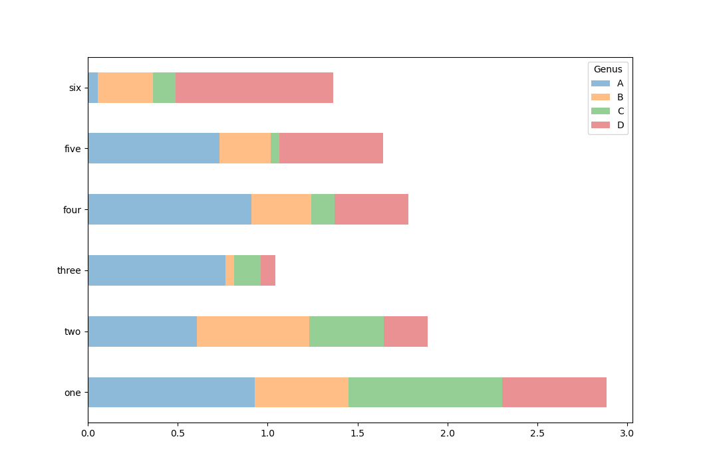
Предположим, что есть набор данных по счетам и чаевым в ресторане, и нам нужно построить столбчатую диаграмму с накоплением, показывающую процентное соотношение точек данных для каждого размера группы в каждый день. Загрузим данные из файла tips.csv и создадим сводную по дням и размеру вечеринки (количество человек):
In [43]: tips = pd.read_csv('tips.csv')
In [44]: tips.head()
Out[44]:
total_bill tip smoker day time size
0 16.99 1.01 No Sun Dinner 2
1 10.34 1.66 No Sun Dinner 3
2 21.01 3.50 No Sun Dinner 3
3 23.68 3.31 No Sun Dinner 2
4 24.59 3.61 No Sun Dinner 4
In [45]: party_counts = pd.crosstab(tips['day'], tips['size'])
In [46]: party_counts
Out[46]:
size 1 2 3 4 5 6
day
Fri 1 16 1 1 0 0
Sat 2 53 18 13 1 0
Sun 0 39 15 18 3 1
Thur 1 48 4 5 1 3
In [47]: party_counts = party_counts.loc[:, 2:5]
Теперь нормализуем данные так, чтобы сумма в каждой строке была равна \( 1 \) и построим столбчатую диаграмму:
In [48]: party_pcts = party_counts.div(party_counts.sum(1), axis=0)
In [49]: party_pcts
Out[49]:
size 2 3 4 5
day
Fri 0.888889 0.055556 0.055556 0.000000
Sat 0.623529 0.211765 0.152941 0.011765
Sun 0.520000 0.200000 0.240000 0.040000
Thur 0.827586 0.068966 0.086207 0.017241
In [50]: party_pcts.plot.bar()
Out[50]: <matplotlib.axes._subplots.AxesSubplot at 0x7f41cb024a60>
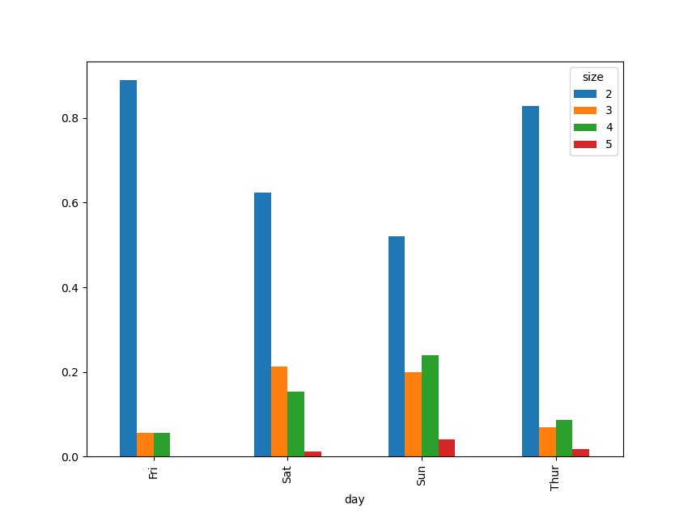
Таким образом, видно, что количество участников вечеринок в данном наборе увеличивается в выходные дни.
В случае, если требуется агрегировать или суммировать данные перед
построением графика, использование пакета seaborn может значительно
упростить задачу. Давайте посмотрим на процент чаевых в день с помощью
библиотеки seaborn:
In [51]: import seaborn as sns
In [52]: tips['tip_pct'] = tips['tip']/(tips['total_bill'] - tips['tip'])
In [53]: tips.head()
Out[53]:
total_bill tip smoker day time size tip_pct
0 16.99 1.01 No Sun Dinner 2 0.063204
1 10.34 1.66 No Sun Dinner 3 0.191244
2 21.01 3.50 No Sun Dinner 3 0.199886
3 23.68 3.31 No Sun Dinner 2 0.162494
4 24.59 3.61 No Sun Dinner 4 0.172069
In [54]: sns.barplot(x='tip_pct', y='day', data=tips, orient='h')
Out[54]: <matplotlib.axes._subplots.AxesSubplot at 0x7f41cb608dc0>
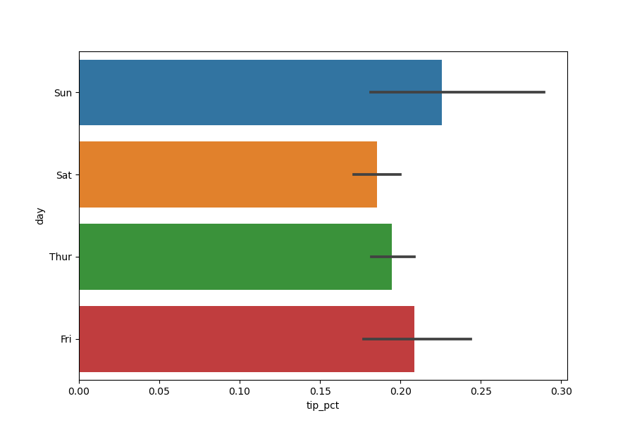
Функция barplot библиотеки seaborn принимает параметр data, который
может быть объектом DataFrame. Остальные параметры ссылаются на
имена столбцов. Поскольку в день имеется несколько наблюдений, то
столбцы диаграммы представляют собой среднее значение параметра
tip_pct. Черные линии, нарисованные на столбцах диаграммы,
представляют 95-процентный доверительный интервал (это можно настроить
с помощью опционального параметра).
Функция barplot имеет параметр hue, который позволяет разделить
отображение по дополнительному категориальному значению:
In [55]: sns.barplot(x='tip_pct', y='day', hue='time', data=tips, orient='h')
Out[55]: <matplotlib.axes._subplots.AxesSubplot at 0x7f41ad8258b0>
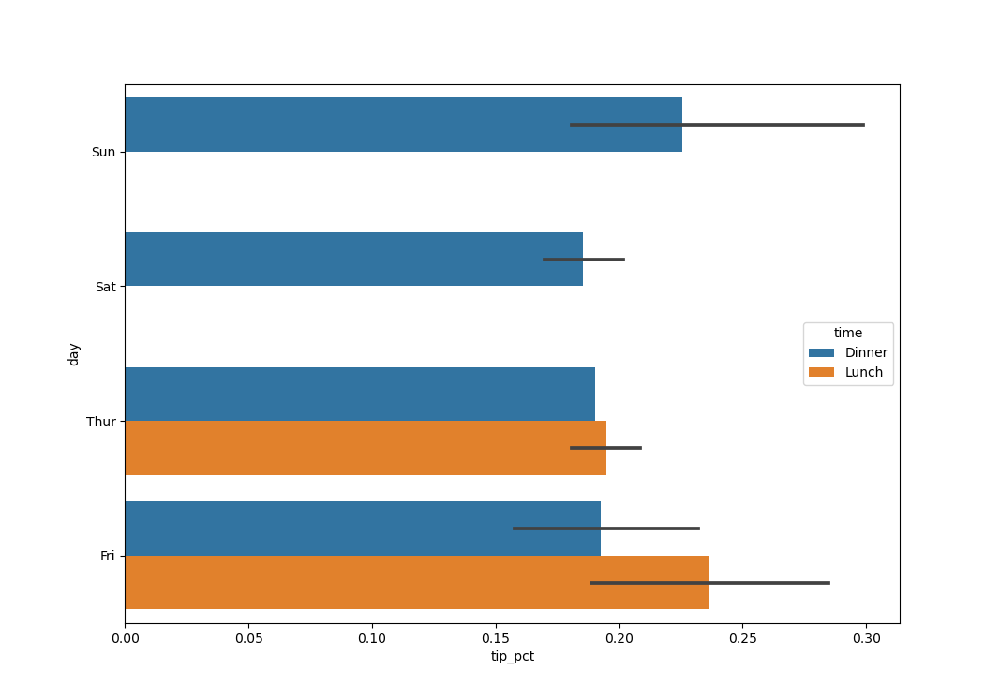
Гистограмма — это своего рода столбчатая диаграмма, которая дает
дискретное отображение частоты значений. Составим гистограмму
процентных долей от общего счета, используя метод plot.hist объекта
Series:
In [56]: tips['tip_pct'].plot.hist(bins=50)
Out[56]: <matplotlib.axes._subplots.AxesSubplot at 0x7f41ad456460>
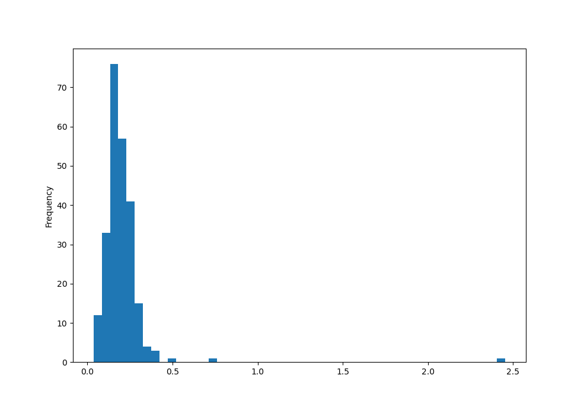
Связанный с гистограммой тип графиков — график плотности,
который формируется путем вычисления оценки непрерывного распределения
вероятности, которое могло бы генерироваться наблюдаемыми данными.
Обычная процедура заключается в аппроксимации этого распределение как
смеси «ядер», то есть более простых распределений, таких как нормальное
распределение. Таким образом, графики под графиками плотности также
можно понимать графики оценки плотности ядра
(*K*ernel *D*ensity *E*stimate). Функции plot.kde и plot.density
строят график плотности, используя подход KDE:
In [57]: tips['tip_pct'].plot.kde()
Out[57]: <matplotlib.axes._subplots.AxesSubplot at 0x7f41ada33670>
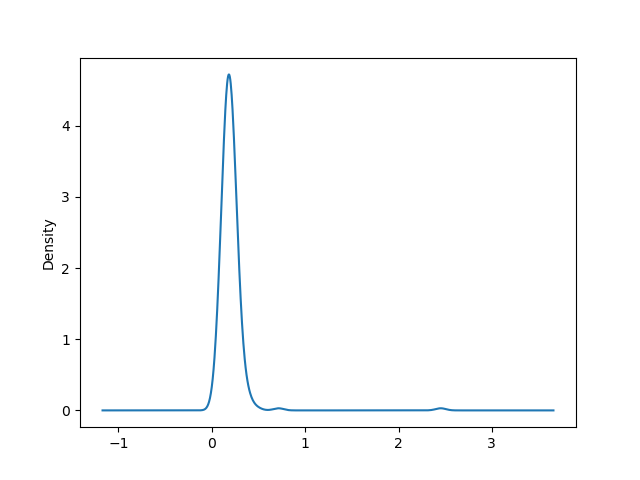
Библиотека seaborn упрощает создание гистограмм и графиков плотности
с помощью метода distplot, который позволяет одновременно строить как
гистограмму, так и непрерывную оценку плотности. В качестве примера
рассмотрим бимодальное распределение, состоящее из двух разных
стандартных нормальных распределений:
In [58]: comp1 = np.random.normal(0, 1, size=200)
In [59]: comp2 = np.random.normal(10, 2, size=200)
In [60]: values = pd.Series(np.concatenate([comp1, comp2]))
In [61]: sns.distplot(values, bins=100, color='k')
Out[61]: <matplotlib.axes._subplots.AxesSubplot at 0x7f41cbf66c40>
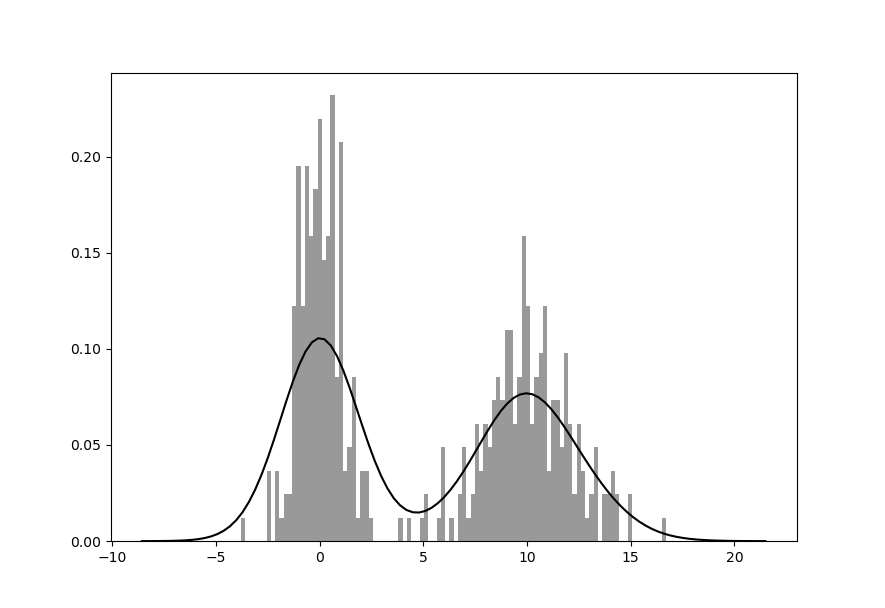
Диаграммы рассеяния полезны при изучении связей между двумя одномерными рядами данных. Например, загрузим набор данных из файла macrodata.csv проекта Statmodels. Выберем некоторые переменные и вычислим «логарифмические разности»:
In [62]: macro = pd.read_csv('macrodata.csv')
In [63]: data = macro[['cpi', 'm1', 'tbilrate', 'unemp']]
In [64]: trans_data = np.log(data).diff().dropna()
In [65]: trans_data[-5:]
Out[65]:
cpi m1 tbilrate unemp
198 -0.007904 0.045361 -0.396881 0.105361
199 -0.021979 0.066753 -2.277267 0.139762
200 0.002340 0.010286 0.606136 0.160343
201 0.008419 0.037461 -0.200671 0.127339
202 0.008894 0.012202 -0.405465 0.042560
Теперь воспользуемся функцией regplot библиотеки seaborn, которая
строит графики рассеяния и предлагает график линейной регрессии:
In [66]: sns.regplot('m1', 'unemp', data=trans_data)
Out[66]: <matplotlib.axes._subplots.AxesSubplot at 0x7f41ad901100>
In [67]: plt.title('Зависимость $\log$ {} от $\log$ {}'.format('m1', 'unemp'))
Out[67]: Text(0.5, 1.0, 'Зависимость $\\log$ m1 от $\\log$ unemp')
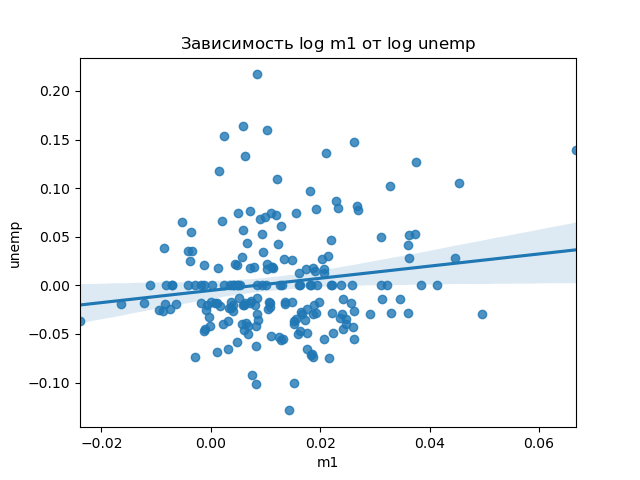
При анализе данных полезно иметь возможность просматривать все
диаграммы рассеяния среди группы переменных, т.е. строить, так
называемые, парные графики или матрицу диаграмм рассеяния. В
библиотеке seaborn для этого есть удобная функция pairplot,
которая, в частности, поддерживает размещение гистограмм или оценок
плотности каждой переменной по диагонали:
In [68]: sns.pairplot(trans_data, diag_kind='kde', plot_kws={'alpha': 0.2})
Out[68]: <seaborn.axisgrid.PairGrid at 0x7f419d6126d0>
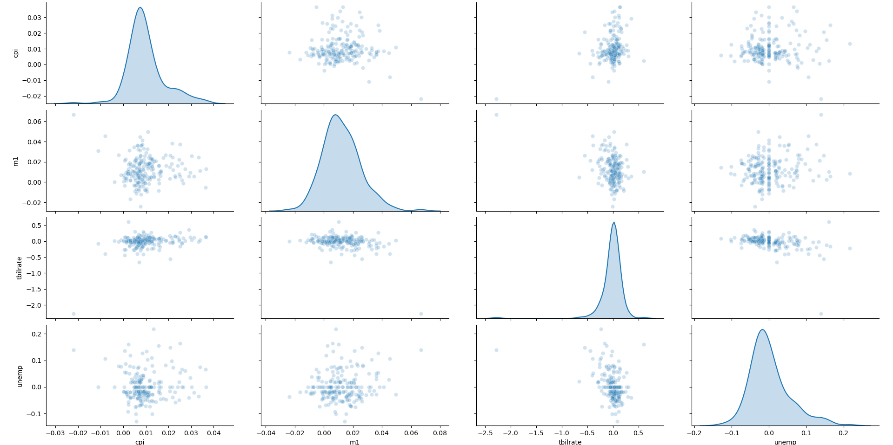
Одним из способов визуализации данных с множеством категориальных
переменных является использование сетки фасетов (facet grid). В
библиотеке seaborn есть удобная функция catplot, которая
упрощает создание сетки фасетов:
In [69]: sns.catplot(x='day', y='tip_pct', hue='time', col='smoker',
...: kind='bar', data=tips[tips.tip_pct < 1])
Out[69]: <seaborn.axisgrid.FacetGrid at 0x7f419d6d96a0>
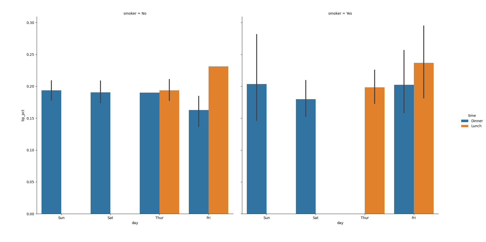
Вместо отображения разными цветами столбцов диаграмм в фасете мы также можем расширить сетку фасетов, добавив одну строку по времени:
In [70]: sns.catplot(x='day', y='tip_pct', row='time',
...: col='smoker',
...: kind='bar', data=tips[tips.tip_pct < 1])
Out[70]: <seaborn.axisgrid.FacetGrid at 0x7f419deeb1f0>
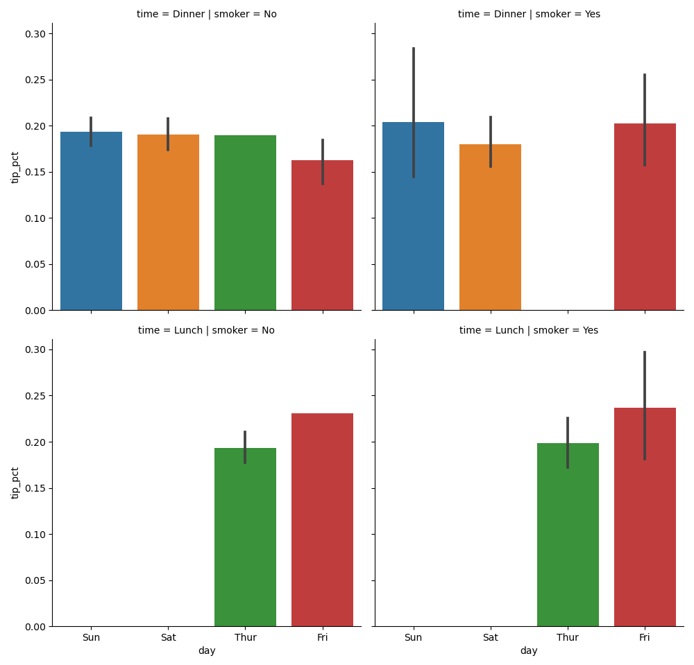
Функция catplot поддерживает другие типы графиков, которые могут быть
полезны. Например, блочные графики, которые показывают медиану,
квартили и выбросы:
In [71]: sns.catplot(x='tip_pct', y='day', kind='box', data=tips[tips.tip_pct < 0.5])
Out[71]: <seaborn.axisgrid.FacetGrid at 0x7f419df999d0>
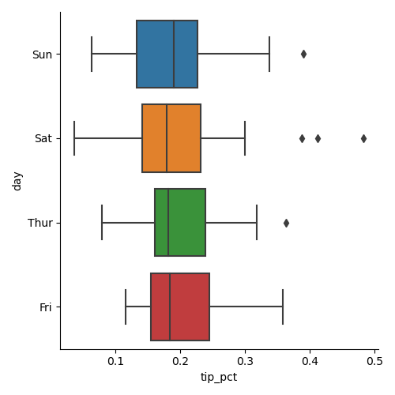
Можно создавать свои собственные сетки фасетов,
используя более общий класс seaborn.FacetGrid (см.
документацию seaborn).